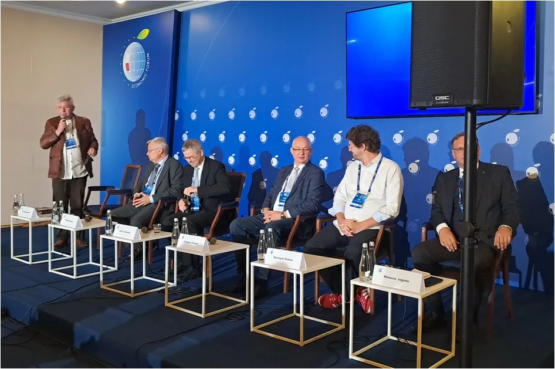
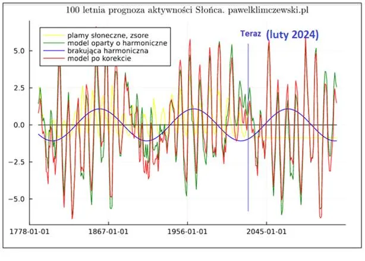
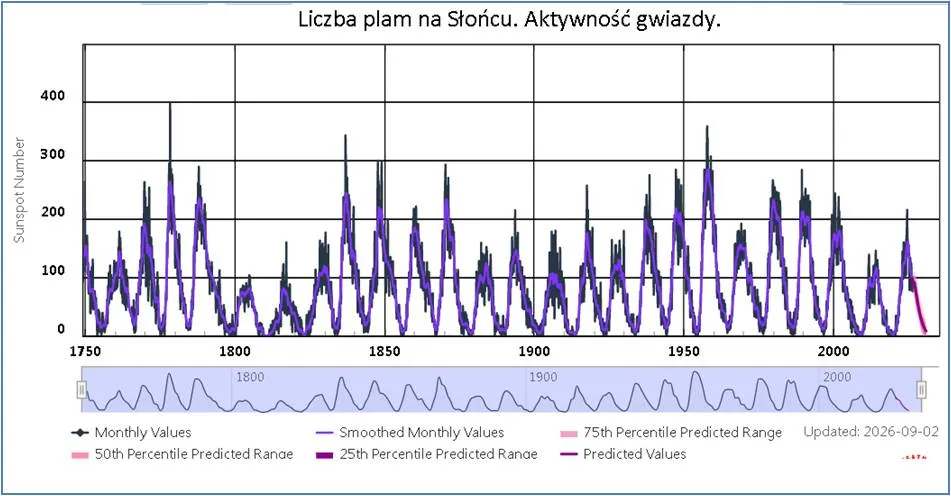
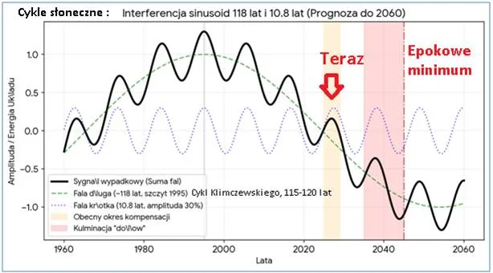

Słońce zgodnie z prognozą idzie spać na kilka dekad.
Słońce zgodnie z prognozą idzie spać na kilka dekad.
Zanim opublikuję relacje z panelu, jaki miałem przyjemność prowadzić tydzień temu na Forum Ekonomicznym w Karpaczu 2026 przypomnę bardzo istotny artykuł o tym, co ludzkość wie na pewno o klimacie Ziemi i wpływie Słońca i Kosmosu na jego zachowania.

Dyskurs o antropogenicznym wzroście stężenia dwutlenku węgla w atmosferze i jego wpływie na klimat jest tematem z prasy popularnej i nie jest kwestią naukową. Jest to tzw. “miejska legenda”, czyli fikcja.
Tytuł panelu to: “Konsekwencje transformacji klimatyczno-energetycznej. Rozkwit, czy zagłada Polski, Europy i świata?”, i jak się domyślacie, w obliczu faktów, wnioski po dyskusji światłych ludzi były dramatyczne. Prof. Jacek Janowski nawet sformował potrzebę penitencjarnego rozwiązania kwestii odpowiedzialności decydentów, których działania mają tragiczne konsekwencje ekonomiczne na wielką skalę. Np. Art. 296 KK za “wyrządzenie szkody w obrocie gospodarczym”, tzw. nadużycie zaufania przewiduje 10 lat, co przy podobnych wyrokach za niepłacenie podatków przez 1 osobę jest śmiesznie niskie.
W panelu brali udział: dr hab. Jacek Janowski, prof. ucz. PW; dr Mirosław Gajer, Akademia Górniczo- Hutnicza; Szczepan Roman, Polskie Towarzystwo Gospodarcze; dr Grzegorz Chocian, Fundacja Konstruktywnej Ekonomii Ecoprobono; dr Mateusz Jagieła, UKSW.
Poniżej wspomniany artykuł, zapraszam!
Słońce zgodnie z prognozą idzie spać na kilka dekad.
Już lutym 2024, opublikowałem prognozę aktywności Słońca zawierającą nowy czynnik, ponad 100- letni długi cykl wewnętrznych oscylacji naszej gwiazdy. Na wykresie pierwszym mamy aktualną sytuację oraz prognozę. Dane sugerują, że jesteśmy już daleko za maksimum długiego cyklu z lat 1990-1995 i schodzimy zgodnie z planem do okresów chłodnych.

“Globalna nauka” przechodzi bardzo głęboki kryzys, zagłuszane są wszelkie badania na temat wpływu Słońca i Kosmosu na Ziemię. W sytuacji, gdy wiadomo, że zmiany na Słońcu powodują zmiany w atmosferze Jowisza wpływ naszej gwiazdy na Ziemię jest ignorowany. Opisany przeze mnie analogiczny do słonecznego cykl energii cyklonów na Ziemi jest nauce nieznany, mimo że jego wykazanie jest dziecinnie proste i zajmuje kilka godzin. Obecna obsesja klimatyczna zabrania kierowania uwagi na Słońce jako źródło energii cieplnej i jego związek z klimatem naszej planety.

Lata 2040+ to będzie absolutne dno nadchodzącego epokowego minimum energetycznego Ziemi, w którym dwa razy nakładają się na siebie dołki fali długiego cyklu Klimczewskiego o długości stu osiemnastu lat oraz fali krótkiej cyklu słonecznego o długości niespełna jedenastu lat. Ta destruktywna interferencja sprowadzi wypadkową energię układu do najniższego poziomu w całym stuletnim profilu. W praktyce fizycznej, przy tak skrajnie osłabionej heliosferze, Ziemia zostanie wystawiona na najsilniejsze od ponad wieku bombardowanie galaktycznym promieniowaniem kosmicznym, co przełoży się na maksymalny strumień neutronów mierzonych w Oulu.

Wywołana tym potężna jonizacja atmosfery zapoczątkuje masową nukleację niskich chmur troposferycznych, drastycznie zwiększając globalne albedo planety. Gwałtowne zmiany w bilansie radiacyjnym i dystrybucji energii termicznej między równikiem a biegunami całkowicie przesterują dynamikę układów barycznych, wpływając bezpośrednio na energię cyklonów oraz trajektorie prądów strumieniowych. Wykres doskonale obnaża słabość oficjalnych modeli klimatycznych, pokazując, że obecny okres kompensacji jedynie tymczasowo maskuje potężny, strukturalny zjazd fali długiej, który po 2030 roku zamanifestuje się nieliniowym tąpnięciem energetycznym całego układu pod dyktando procesów kosmicznych.
Paweł Klimczewski